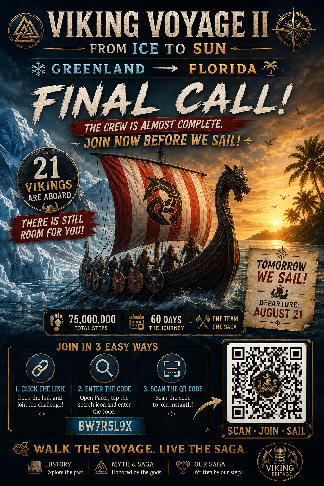
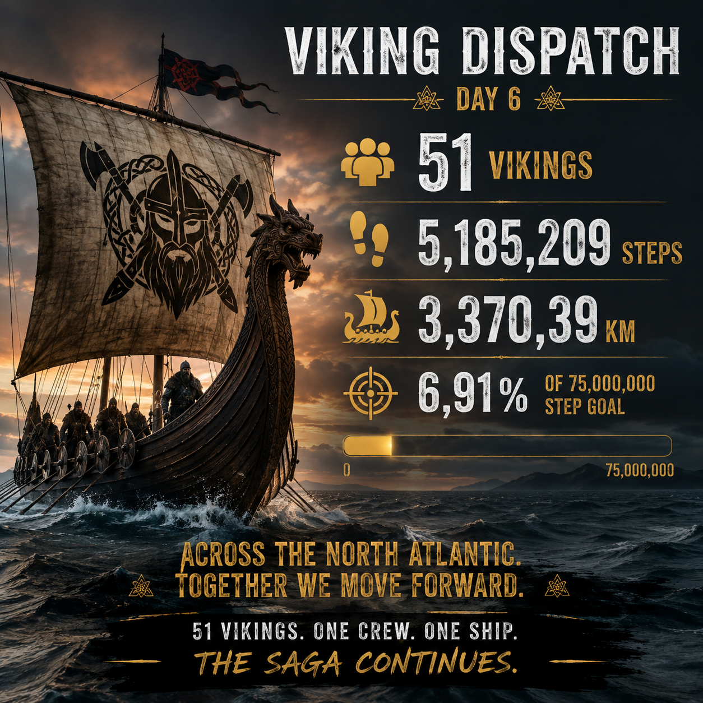
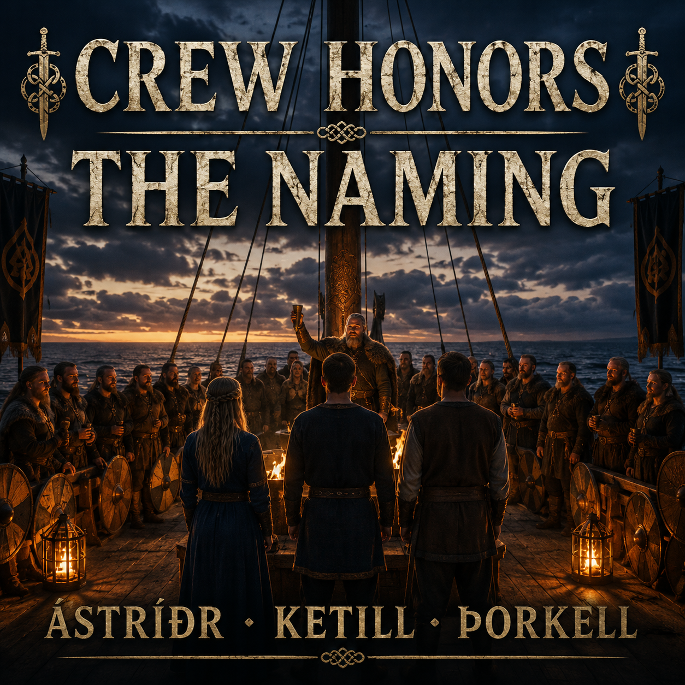
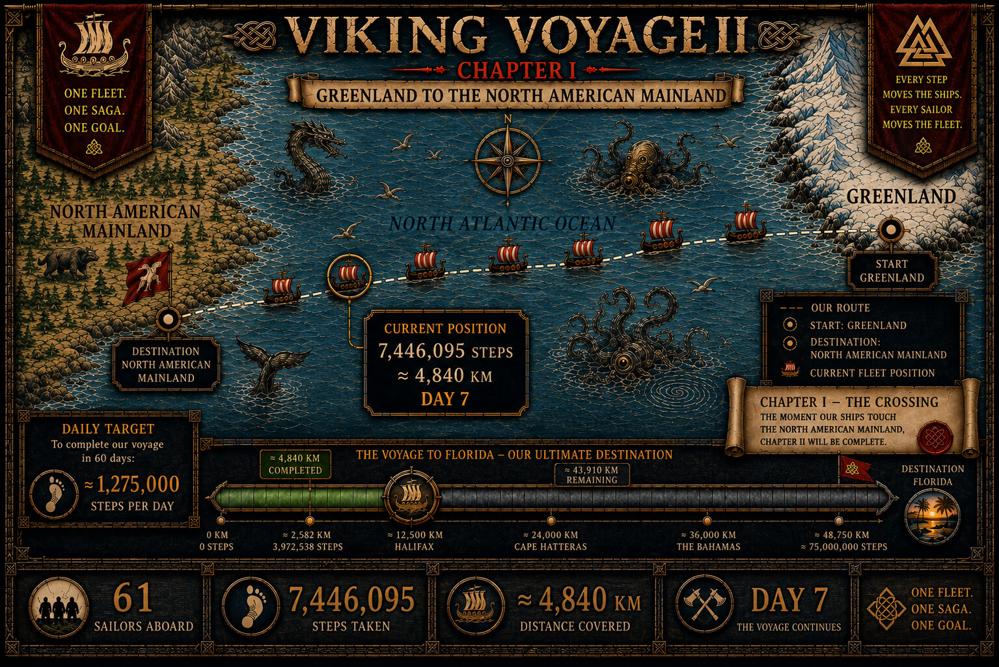

THE SHIP'S LOG
THE FLEET IS UNDERWAY
Real activity in Pacer moves the ship. These are the latest verified numbers from our crew.


HUGIN & MUNIN WATCH OVER US
Every step is seen. Every effort matters. Every Viking belongs.

THE STEPS BEHIND THE SAGA
PACER MOVES THE FLEET
Pacer records the steps. Nordic Viking Heritage turns them into a living voyage.
Every step in Viking Voyage II is recorded by our international crew through the Pacer app. Pacer provides the activity platform, leaderboards and community that power our voyage. Nordic Viking Heritage transforms those real steps into maps, history, Crew Honors and one unfolding saga.
DISCOVER PACERViking Voyage II is an independent Nordic Viking Heritage community project powered by activity recorded in Pacer. No official partnership or endorsement is implied.
LATEST VIKING DISPATCH
WHEN ONE OAR RESTS, THE OTHERS PULL HARDER
Day 8 brought another 1,319,388 steps — approximately 858 km. Our voyage now stands at 8,765,483 steps, or roughly 5,698 km since Greenland.
Today Diego reminded us what this voyage is really about. Sometimes a Viking must put down the oar and recover. When that happens, the ship does not stop — the crew simply pulls harder until their brother or sister can return.
Tonight two new Vikings have joined that family. Welcome aboard. Your oars are waiting.
63 SAILORS. ONE FLEET. ONE FAMILY.
NO VIKING GETS LEFT BEHIND.
THE VOYAGE MAP — DAY 8
CHAPTER I — THE CROSSING
The fleet has sailed 8,765,483 steps — approximately 5,698 km — from Greenland toward the North American mainland. The locked Greenland → North America → Florida route remains our fixed navigational reference.

CHAPTER I
THE CROSSING CONTINUES
Cold water behind us. A continent ahead. On Day 8, our 63 sailors have carried the fleet approximately 5,698 km across the North Atlantic.
66,234,517 steps — approximately 43,052 km — remain before Florida. With 52 days left, the fleet needs approximately 1,274,000 steps per day.
Chapter I will close when our ships touch the North American mainland. Until then, every real step keeps the crossing alive.
THREE LAYERS — ONE EXPERIENCE
THE VOYAGE BECOMES A LIVING SAGA
HISTORY
Verified history and archaeology guide the places, people and events we encounter along the route.
MYTH & SAGA
The gods, ravens and stories of the Norse world give the crossing its mythic voice.
OUR SAGA
The crew's real steps decide the pace, the weather and the next chapter of the voyage.
CREW HONORS — THE NAMING
A NEW NAME ENTERS THE SHIP'S ROLL
THE HONOR BEHIND THE NAME
WHY WE NAME OUR SAILORS
Crew Honors is a tradition created for Viking Voyage II. It belongs to OUR SAGA — it is not presented as a reconstruction of a documented Viking Age ceremony. A sailor may be called forward for exceptional distance, steady persistence, meaningful improvement, a comeback, or the Viking Spirit that keeps the whole fleet moving.
Each honored sailor receives a personal, historically grounded Viking name in three forms: an easy-to-read name, its historical Old Norse form, and the name written in Viking Age runes using the Younger Futhark runic alphabet. Once entered into THE SHIP'S ROLL, the name remains with that sailor for the rest of the voyage.

A strong Old Norse name carried forward in honor of the courage, spirit and steadfast presence that help keep our Viking family together.
THE SHIP'S ROLL
NAMES CARRIED ABOARD
THE VOYAGE IN PICTURES
FROM THE FIRST CALL TO THE SAGA WE ARE WRITING TODAY
The images of Viking Voyage II are becoming a record of the voyage itself. This archive follows the people, the calls to adventure, the dispatches and the rituals that shaped OUR SAGA. The maps now have their own chart room below.
PRELUDEBEFORE THE OARS TOUCHED THE WATER


UNDERWAYTHE FLEET FINDS ITS RHYTHM


TODAYDAY 8 — ONE FLEET. ONE FAMILY.
THE RITUALTHE CREW REMEMBERS. THE SAGA GROWS.

THE ARCHIVE WILL KEEP GROWING. Every image used during the voyage is part of the story. Recovered early teasers and recruitment artwork will be restored here as the visual archive is completed.
THE CARTOGRAPHER'S ARCHIVE
THE CHARTS OF OUR VOYAGE
The latest Master Map tells us where the fleet is now. This archive tells us how we got there. Each chart is preserved as a page in the navigation log, so the crew can watch the fleet move across the North Atlantic one real step at a time.
LATEST MAP = WHERE WE ARE NOWCARTOGRAPHER'S ARCHIVE = HOW WE GOT HERE
CHAPTER ITHE CROSSING — GREENLAND TO THE NORTH AMERICAN MAINLAND


Earlier recovered charts are being preserved for this archive as well. No map will replace another: each one remains as a permanent record of the fleet's progress. When Chapter II opens, a new chart section will begin beneath Chapter I.
“Every step counts.
Every Viking matters.”